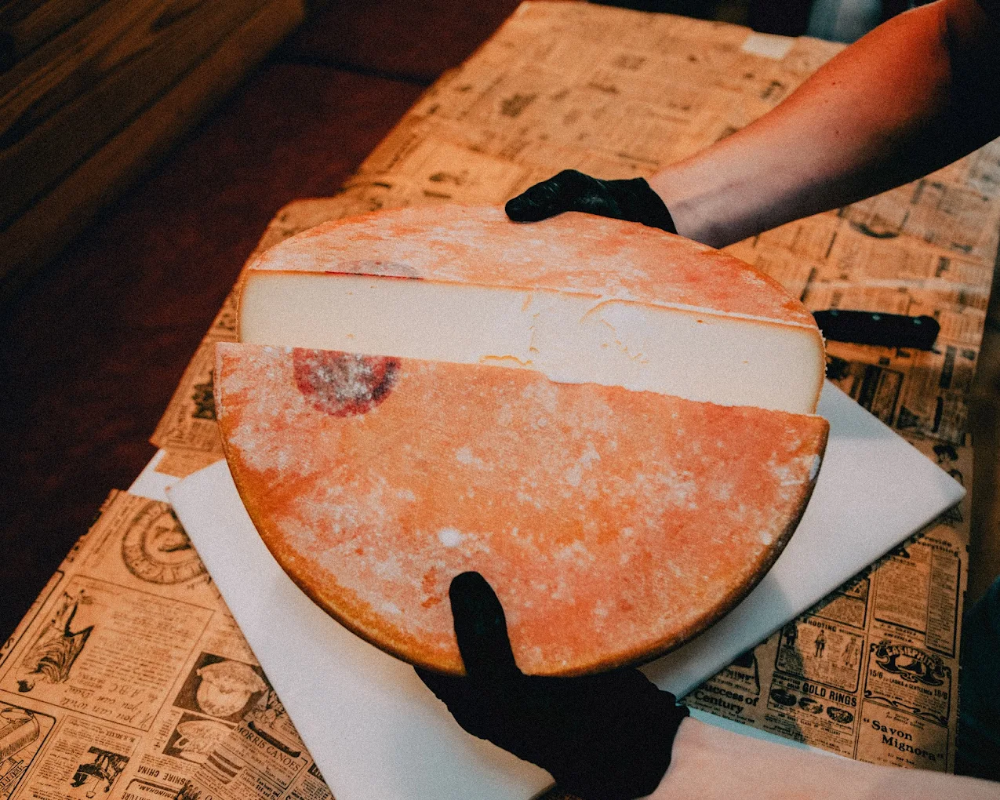
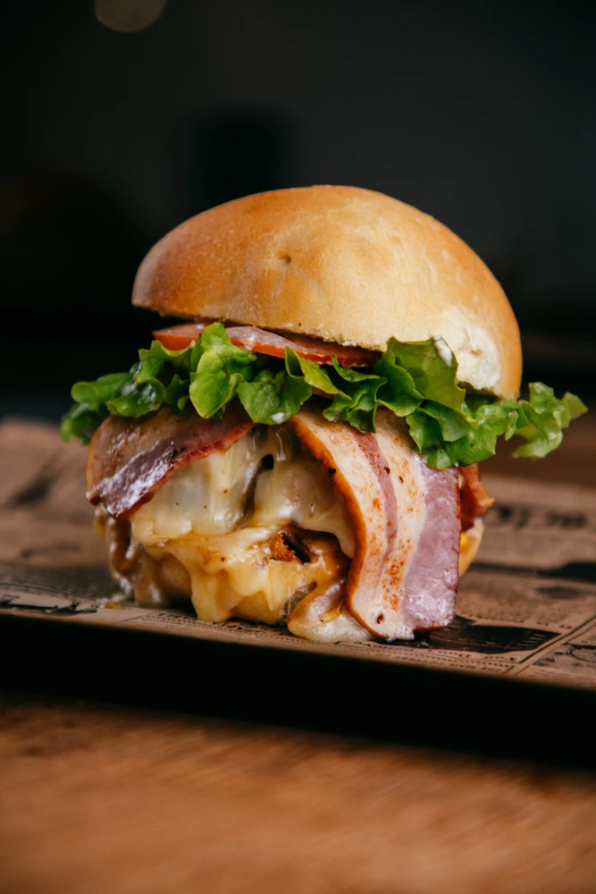

L'exigence au service du goût : une sélection rigoureuse d'ingrédients de qualité, des fromages régionaux d'exception et un véritable savoir-faire pour une expérience burger unique.

Ici à Chambéry, nous aimons les bons produits. C'est pourquoi notre carte fait la part belle aux Burgers Gourmets.
Nous mettons en valeur de délicieux fromages : Reblochon AOP, Raclette au lait cru, Fourme d'Ambert et Chèvre. Des fromages fondants qui viennent napper généreusement nos ingrédients.
Pour nos Burgers Gourmets, nous utilisons un pain boulanger artisanal savoureux et consistant, spécialement sélectionné pour accueillir avec tenue nos viandes bouchères et nos fromages de terroir fondus.

Servi dans un bun brioché ultra moelleux et doré, le Smash Burger représente l'essence même du fast-food nord-américain authentique. Nous le proposons à tous ceux qui recherchent la texture parfaite.
Une boule de viande hachée fraîche pressée fermement sur notre plancha brûlante : une réaction de Maillard intense se forme instantanément, créant une croûte caramélisée croustillante tout en préservant une jutosité maximale à l'intérieur.